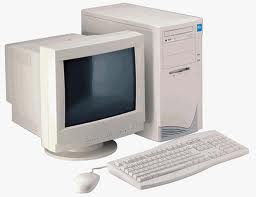

Historia de la Computadora
¿Qué es la Informática?
Segun la RAE (Real Academia Española de la Lengua) Es el conjunto de conocimientos científicos y técnicos para hacer posible el tratamiento automático de la información por medio de computadoras electrónicas.
Computadora u Ordenador.
Es una máquina electrónica capaz de aceptar unos datos de entrada, efectuar con ellos una operaciones aritméticas y lógicas, y proporcionar la información resultante a través de un medio de salida.
Calculadora
Es una máquina capaz de efectuar operaciones aritméticas bajo el control directo del usuario.
Datos
Son conjuntos de símbolos utilizados para expresar O representar un valor numérico, un hecho, un objeto O una idea, codificada en la forma adecuada para ser objeto de tratamiento por medio de una computadora.
Información
Datos tratados y organizados, con significado desde el punto de vista del usuario.
INFORMACION UTIL = DATOS + INTERPRETACION
EVOLUCION DE LOS SISTEMAS DE CALCULO
| Ábaco | La Calculadora de Sckickard | La Pascalina | La Calculadora Universal | La Lógica Matemática |
|---|---|---|---|---|
| Serie de alambres paralelos, sujetos por los extremos en un armazón rectangular, sobre los que se pueden desplazar una serie de bolas o fichas. | En 1623 Wilhelm Sckickard construye la primera máquina de calcular. | Conjunto de discos dentados, cada uno de los cuales tiene 10 divisiones, que representaban un dígito. Es capaz de realizar sumas y restas. | 1694 Gottfried W. Leibniz. Perfecciona la máquina de Pascal añadiéndole la multiplicación y división. | George Boole (1815-1864), es el fundador de la teoría de la lógica matemática. |

|
Las Pascalina: Máquina Para Sumar
Modelo de Babbage
El primer gran proyecto de Charles Babbage fue un “ordenador mecánico” llamado “Máquina Diferencial”. Si bien la máquina nunca fue construida -principalmente por motivos económicos- su diseño era capaz de construir tablas de logaritmos y de funciones trigonométricas mediante un método que utilizaba polinomios.
Modelo de Von neumann
La arquitectura de von Neumman es un diseño que usa una memoria para almacenar instrucciones y datos. Éste tipo de máquina es la implementación de una máquina de Turing y la visión de una arquitectura secuencial en lugar de paralela.
Generaciónes de la Computación
| Primera Generación | Segunda Generación | Tercera Generación | Cuarta Generación | Quinta Generación |
|---|---|---|---|---|
| Se utilizaban válvulas o tubos de vacío, eran caros, poco almacenamiento, lentos e incapacidad de ejecutar más de una tarea a la vez. Ejemplos: UNIVAC, EDSAC, EDVAC, MANIAC, ILLIAC, EDVAC, JHONIAK, etc. | Se utilizaban los transistores, tenían un sistema operativo, hay un desarrollo de periféricos de entrada y salida, lenguajes de alto nivel, más rápida, más pequeñas, menos consumo de energía, más tiempo de vida. Ejemplos: IBM 700, IBM 1400 | Se utilizaban circuitos integrados, mejores lenguajes de programación, programas donde los usuarios no debían programar sus aplicaciones, mayor velocidad de cálculo, más pequeñas, varias tareas al mismo tiempo. Ejemplos: IBM system 360, GE 600 y PDP-11 | Se utilizaban circuitos de alta escala de integración, microprocesadores, mejor lenguaje, mejores periféricos, aparecen los ordenadores personales, nuevas memorias de almacenamiento, mayor velocidad en general. | Arquitectura diferente a la de Von Neumann, máquinas neuronales, ordenador óptico, etc. |

|
 |